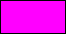
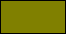

GameMaker Studio 2 has a comprehensive selection of
functions to manipulate the colour and alpha of what is drawn on
the screen (for blending images using special blend modes
and other PGU specific functions see the section on the GPU Control. Using these functions you can
separate colours into their component parts, create new colours and
manipulate the draw alpha to change how different things in your
game are drawn together. Apart from these functions, there are also
a number of constants that can be used as base colours in these
(and other) functions:
常量
颜色
值
c_aqua
16776960
c_black
0
c_blue
16711680
c_dkgray
4210752
c_fuchsia

16711935
c_gray
8421504
c_green
32768
c_lime
65280
c_ltgray
12632256
c_maroon
128
c_navy
8388608
c_olive

32896
c_orange
4235519
c_purple
8388736
c_red
255
c_silver
12632256
c_teal
8421376
c_white
16777215
c_yellow
65535
Note that you can also create colours from their hexadecimal
value using the "$" symbol beforehand, and these values can also be
used in the colour functions to get component hues or for mixing,
etc... The hexadecimal value for these colours is split into three
parts with the format Blue / Green / Red so, for example, to define
a purple colour you could use:
col = $983c95
Where 98 is the blue component, 3c is the green component and 95
is the red component.
The following functions can be used to get the component hues,
compound hue, saturation and luminosity of a selected colour as
well as the alpha and other properties: